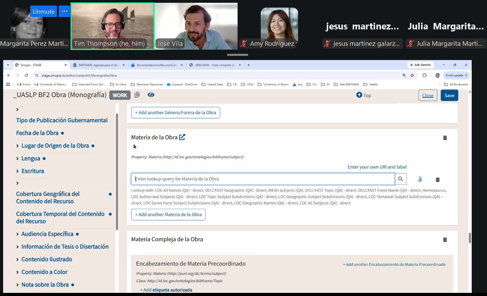

Del 31 de agosto al 4 de septiembre de 2026 participé como instructor en un taller práctico organizado para estudiantes de la Universidad Autónoma de San Luis Potosí (UASLP), México, como parte de su Seminario de Educación Continua y Titulación 2026-II.

El taller fue desarrollado como una colaboración entre Yale University y University of Miami, con la participación de Timothy A. Thompson, Irmarie Fraticelli-Rodríguez, Amy Rodríguez, Daniel Mugaburu, Margarita Pérez Martinez y yo. A lo largo de las sesiones trabajamos con los estudiantes en conceptos y herramientas relacionados con Linked Data y BIBFRAME, combinando la introducción a estos modelos con ejercicios y actividades prácticas.

Para mí, uno de los aspectos más interesantes de esta experiencia fue poder contribuir a la enseñanza y difusión de BIBFRAME y los datos enlazados en Latinoamérica. La transición hacia nuevos modelos de descripción bibliográfica no es únicamente un cambio tecnológico: también requiere crear espacios de formación, experimentación e intercambio de conocimientos que permitan a profesionales y futuros profesionales de la información familiarizarse con estas tecnologías.
La experiencia también fue una excelente oportunidad para colaborar con colegas de Yale University y University of Miami y compartir distintas perspectivas sobre la enseñanza de Linked Data y su aplicación en bibliotecas.
← Volver a Actividad profesional